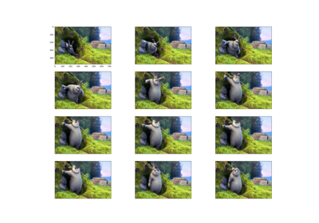

Mydia
1.0
Installation
Requirements
Additional Libraries to install:
Getting started
Get started with some basics
How to simple read a video, given its path?
Now, let’s try to be a little more specific
Great! Now let’s read the same video in
gray scale
, instead of RGB.
Saving the loaded video tensor
Code Documentation
Module:
mydia
Mydia
Docs
»
Getting started
View page source
Getting started
¶

Get started with some basics
Gallery generated by Sphinx-Gallery